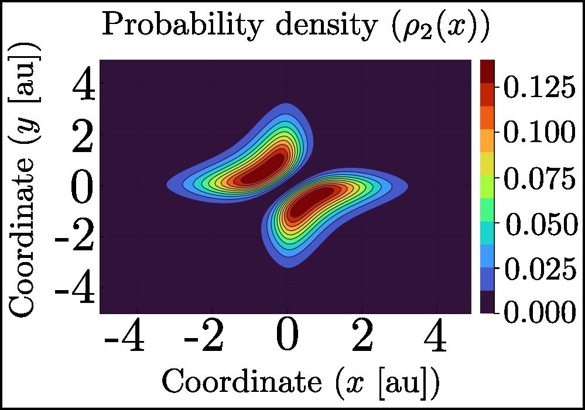

Tutorial To Simulate Coulomb 2D Interaction potential (Helium atom model)
Create simulation directory
First of all we need to create a specific directory to save this specific simulation results
@prompt:~$ mkdir ~/my_directory_path/C2D
@prompt:~$ cd ~/my_directory_path/C2DCreate function potential
We need to create a aspecific function potential for coulomb potential interaction as following:
@prompt:~/my_directory_path/C2D$ vi adhoc_potential_function.jlInside adhoc_potential_function write the following:
distance(DOF1,DOF2)=abs(DOF2-DOF1)
effective_interaction(DOF) = exp(DOF^2)*erfc(DOF)
asymptotical_interaction(DOF) = 1.0/(sqrt(π)*DOF)
function avoided_divergence(DOF,b)
DOF > 25.7 ? func=asymptotical_interaction(DOF+b) : func=effective_interaction(DOF+b)
return func
end
function reduced_confinement_function(DOF1,DOF2,confinement_length,Yukawa_length,
atomic_number)
a=atomic_number*π*sqrt(π)*0.5*(1.0/confinement_length);
b=confinement_length*0.5*(1.0/abs(Yukawa_length));
coordinate=distance(DOF1,DOF2)*(1.0/confinement_length);
return a*exp((-2.0*coordinate+b)*b)*avoided_divergence(coordinate,b)
end
export effective_Yukawa_potential_2e
"""
effective_Yukawa_potential_2e(x,params)
# Aim:
This function calculates the effective Yukawa potential between two electrons in a 1D
system.
The potential is calculated using the reduced confinement function and the avoided
divergence function.
# Arguments
x::Array{Float64,1} : The position of the two electrons in 1D.
params::Tuple : A tuple containing the parameters of the potential.
params[1]::Float64 : The confinement length of the potential.
params[2]::Float64 : The Yukawa length of the potential.
params[3]::Float64 : The position of the nuclei.
params[4]::Float64 : The atomic number of the nuclei.
params[5]::Float64 : The switch factor of the potential.
# Returns
Float64 : The value of the effective Yukawa potential at the position x.
"""
function effective_Yukawa_potential_2e(x,params::Tuple)
confinement_length,Yukawa_length,nuclei_coord,atomic_number,switch_factor=params;
return (switch_factor*(reduced_confinement_function(x[1],x[2],confinement_length,
Yukawa_length,1.0)
-reduced_confinement_function(x[1],nuclei_coord,confinement_length,Yukawa_length,
atomic_number)
-reduced_confinement_function(nuclei_coord,x[2],confinement_length,Yukawa_length,
atomic_number)))
endInput file
We need to create an input file to simulate using default solver function inside FEMTISE package
@prompt:~/my_directory_path/C2D$ vi input.datInside input.dat we need to write the following.
full_path_name = ~/my_directory_path/C2D/name_output_file
dom_type = s
nev = 50
dimension = 2D
sigma = -10.0
adhoc_file_name = ~/my_directory_path/C2D/adhoc_potential_function
potential_function_name = effective_Yukawa_potential_2e
params_potential_types = f f f f f
params_potential = 1.0 100.0 0.0 2 1.0
analysis_param = 5 -0.01 1.0 0.01
output_format_type = jld2 eigen
## ONLY FOR 1D EIGENPROBLEMS
L =
Δx =
## ONLY FOR 2D EIGENPROBLEMS
Lx = 10
Ly = 10
nx = 100
ny = 100
different_masses = false
reduced_density = falseNote that we are setting analysis_param keyword. The parameter that we are going to change is the number 5, from 0.01 value to 1.0 value with step 0.01 value.
Run script
Create Julia code as
@prompt:~/my_directory_path/C2D$ vi run.jlInside run.jl we need to write the following.
begin
using Pkg
Pkg.activate("../")
develop_package = true; develop_package ? Pkg.develop(path="~/my_path_repo/FEMTISE.jl")
: nothing
Pkg.instantiate()
using FEMTISE;
run_default_eigen_problem(set_type_potential("~/my_directory_path/C2D/input.dat"))
endAfter this we can run the simulation using Julia compiler (for example: using multithread running with four threads)
@prompt:~/my_directory_path/C2D$ julia -t 4 run.jl Analysis
After running we obtain an output data file in jld2 format called name_output_file_eigen_data.jld2.
Then using Jupyter Notebook (by intermediate Visual Studio Code) we can analyse output file so:
@prompt:~/my_directory_path/C2D$ code C2D.ipynbInside C2D.ipynb we need to write the following:
Environment
Activate Julia environment
using Pkg
Pkg.activate("./")
Pkg.instantiate()Is necessary to mark FEMTISE package as developed package using specific path repository:
develop_package = true; develop_package ? Pkg.develop(path="~/my_path_repo/FEMTISE.jl") : nothingNow we install package (if is nesseary) and use specific packages to analyse output data:
install_pkg = true
if install_pkg
Pkg.add("Plots")
Pkg.add("PlotlyJS")
end
using FEMTISE;
using Plots;Read output data
All the information that we need to specify is where we find input file then using specific functions we can collect output data
path_input_file_name="~/my_directory_path/C2D/input.dat"
simulation_info, output_data = collect_result_data(true,path_input_file_name)Plotting figures
Building functions to plot figures we have:
"""
plot_eigenvalues(id,results,range_to_show;<keyword arguments>)
# Aim
- Plot the eigenvalues of the Hamiltonian operator.
The eigenvalues are plotted as a function of the parameter λ.
The eigenvalues are obtained from the diagonalization of the Hamiltonian operator.
The eigenvalues are plotted for the range of energy levels specified by the range_to_show
variable.
The keyword arguments are used to set the title, xlabel, ylabel, and legend of the plot.
# Arguments
- `id`: InputData or InputData1D or InputData2D object.
- `results`: Results object.
- `range_to_show::StepRange{Int, Int}`: Range of energy levels to plot.
- `keyword arguments`:
- `set_title::String`: Title of the plot.
- `set_xlabel::String`: Label of the x-axis.
- `set_ylabel::String`: Label of the y-axis.
- `set_legend::Symbol`: Position of the legend.
"""
function plot_eigenvalues(id,results,range_to_show::StepRange{Int, Int};show_label=true)
if id.analysis_param == false
println("PLOT ERROR.")
println("Check attributes, you are using the wrong function method. Analysis
parameter is not activated.")
figure = nothing
else
plotlyjs()
figure = plot(xlabel="Parameter λ",ylabel="Eigen-energies (ϵn(λ) [au])",ticks =
:native)
for i in range_to_show
if show_label
figure = scatter!(real.(results.λvector),real(results.ϵ_matrix[i,:]),
label="n=$(i)",legend=:top)
else
figure = scatter!(real.(results.λvector),real(results.ϵ_matrix[i,:]),
label="")
end
figure = plot!(real.(results.λvector),real(results.ϵ_matrix[i,:]),label="")
end
end
return figure
endNow we can plot eigenenergies:
fig1=plot_eigenvalues(simulation_info,output_data,1:1:10;show_label=true)
display(fig1)Also, we can export figures as *pdf format using
savefig(fig1,"./eigen_energies_vs_parameter.pdf")Following the same logic we can simulate for this coulombic potential and the eigenstates for the first two energy levels are:
